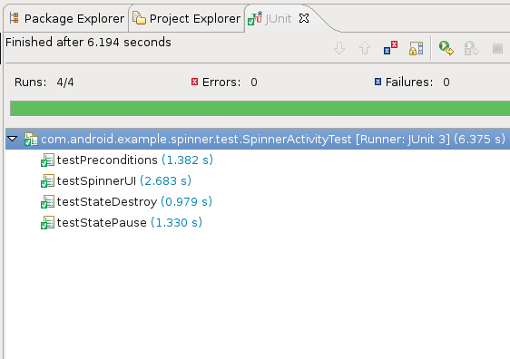
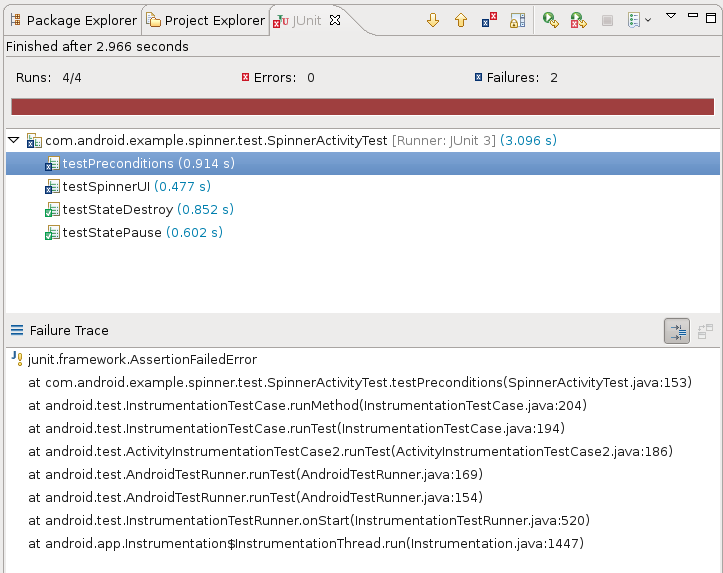

In this document
This topic explains how create and run tests of Android applications in Eclipse with ADT. Before you read this topic, you should read about how to create an Android application with the basic processes for creating and running applications with ADT, as described in Managing Projects from Eclipse and Building and Running from Eclipse. You may also want to read Testing Fundamentals, which provides an overview of the Android testing framework.
ADT provides several features that help you set up and manage your testing environment effectively:
-
It lets you quickly create a test project and link it to the application under test.
When it creates the test project, it automatically inserts the necessary
<instrumentation>element in the test package's manifest file. - It lets you quickly import the classes of the application under test, so that your tests can inspect them.
- It lets you create run configurations for your test package and include in them flags that are passed to the Android testing framework.
- It lets you run your test package without leaving Eclipse. ADT builds both the application under test and the test package automatically, installs them if necessary to your device or emulator, runs the test package, and displays the results in a separate window in Eclipse.
If you are not developing in Eclipse or you want to learn how to create and run tests from the command line, see Testing from Other IDEs.
Creating a Test Project
To set up a test environment for your Android application, you must first create a separate
project that holds the test code. The new project follows the directory structure
used for any Android application. It includes the same types of content and files, such as
source code, resources, a manifest file, and so forth. The test package you
create is connected to the application under test by an
<instrumentation> element in its manifest file.
The New Android Test Project dialog makes it easy for you to generate a
new test project that has the proper structure, including the
<instrumentation> element in the manifest file. You can use the New
Android Test Project dialog to generate the test project at any time. The dialog appears
just after you create a new Android main application project, but you can also run it to
create a test project for a project that you created previously.
To create a test project in Eclipse with ADT:
- In Eclipse, select File > New > Other. This opens the Select a Wizard dialog.
- In the dialog, in the Wizards drop-down list, find the entry for Android, then click the toggle to the left. Select Android Test Project, then at the bottom of the dialog click Next. The New Android Test Project wizard appears.
-
Next to Test Project Name, enter a name for the project. You may use any name,
but you may want to associate the name with the project name for the application under test.
One way to do this is to take the application's project name, append the string "Test" to
it, and then use this as the test package project name.
The name becomes part of the suggested project path, but you can change this in the next step.
-
In the Content panel, examine the suggested path to the project.
If Use default location is set, then the wizard will suggest a path that is
a concatenation of the workspace path and the project name you entered. For example,
if your workspace path is
/usr/local/workspaceand your project name isMyTestApp, then the wizard will suggest/usr/local/workspace/MyTestApp. To enter your own choice for a path, unselect Use default location, then enter or browse to the path where you want your project.To learn more about choosing the location of test projects, please read Testing Fundamentals.
- In the Test Target panel, set An Existing Android Project, click Browse, then select your Android application from the list. You now see that the wizard has completed the Test Target Package, Application Name, and Package Name fields for you (the latter two are in the Properties panel).
- In the Build Target panel, select the Android SDK platform that the application under test uses.
- Click Finish to complete the wizard. If Finish is disabled, look for error messages at the top of the wizard dialog, and then fix any problems.
Creating a Test Package
Once you have created a test project, you populate it with a test package. This package does not require an Activity, although you can define one if you wish. Although your test package can combine Activity classes, test case classes, or ordinary classes, your main test case should extend one of the Android test case classes or JUnit classes, because these provide the best testing features.
Test packages do not need to have an Android GUI. When you run the package in Eclipse with ADT, its results appear in the JUnit view. Running tests and seeing the results is described in more detail in the section Running Tests.
To create a test package, start with one of Android's test case classes defined in
android.test. These extend the JUnit
TestCase class. The Android test classes for Activity objects
also provide instrumentation for testing an Activity. To learn more about test case
classes, please read the topic
Testing Fundamentals.
Before you create your test package, you choose the Java package identifier you want to use for your test case classes and the Android package name you want to use. To learn more about this, please read Testing Fundamentals.
To add a test case class to your project:
- In the Project Explorer tab, open your test project, then open the src folder.
- Find the Java package identifier set by the projection creation wizard. If you haven't added classes yet, this node won't have any children, and its icon will not be filled in. If you want to change the identifier value, right-click the identifier and select Refactor > Rename, then enter the new name.
- When you are ready, right-click the Java package identifier again and select New > Class. This displays the New Java Class dialog, with the Source folder and Package values already set.
- In the Name field, enter a name for the test case class. One way to choose a class name is to append the string "Test" to the class of the component you are testing. For example, if you are testing the class MyAppActivity, your test case class name would be MyAppActivityTest. Leave the modifiers set to public.
- In the Superclass field, enter the name of the Android test case class you are extending. You can also browse the available classes.
- In Which method stubs would you like to create?, unset all the options, then click Finish. You will set up the constructor manually.
- Your new class appears in a new Java editor pane.
You now have to ensure that the constructor is set up correctly. Create a constructor for your
class that has no arguments; this is required by JUnit. As the first statement in this
constructor, add a call to the base class' constructor. Each base test case class has its
own constructor signature. Refer to the class documentation in the documentation for
android.test for more information.
To control your test environment, you will want to override the setUp() and
tearDown() methods:
-
setUp(): This method is invoked before any of the test methods in the class. Use it to set up the environment for the test (the test fixture. You can usesetUp()to instantiate a new Intent with the actionACTION_MAIN. You can then use this intent to start the Activity under test. -
tearDown(): This method is invoked after all the test methods in the class. Use it to do garbage collection and to reset the test fixture.
Another useful convention is to add the method testPreconditions() to your test
class. Use this method to test that the application under test is initialized correctly. If this
test fails, you know that that the initial conditions were in error. When this happens, further
test results are suspect, regardless of whether or not the tests succeeded.
The Resources tab contains an Activity Testing tutorial with more information about creating test classes and methods.
Running Tests
Running tests from the command line
If you've created your tests in Eclipse, you can still run your tests and test suites by using command-line tools included with the Android SDK. You may want to do this, for example, if you have a large number of tests to run, if you have a large test case, or if you want a fine level of control over which tests are run at a particular time.
To run tests created in Eclipse with ADT with command-line tools, you must first
install additional files into the test project using the android
tool's "create test-project" option. To see how to do this, read
Testing in Other IDEs.
When you run a test package in Eclipse with ADT, the output appears in the Eclipse JUnit view.
You can run the entire test package or one test case class. To do run tests, Eclipse runs the
adb command for running a test package, and displays the output, so there is no
difference between running tests inside Eclipse and running them from the command line.
As with any other package, to run a test package in Eclipse with ADT you must either attach a device to your computer or use the Android emulator. If you use the emulator, you must have an Android Virtual Device (AVD) that uses the same target as the test package.
To run a test in Eclipse, you have two choices:
- Run a test just as you run an application, by selecting Run As... > Android JUnit Test from the project's context menu or from the main menu's Run item.
-
Create an Eclipse run configuration for your test project. This is useful if you want
multiple test suites, each consisting of selected tests from the project. To run
a test suite, you run the test configuration.
Creating and running test configurations is described in the next section.
To create and run a test suite using a run configuration:
- In the Package Explorer, select the test project, then from the main menu, select Run > Run Configurations.... The Run Configurations dialog appears.
- In the left-hand pane, find the Android JUnit Test entry. In the right-hand pane, click the Test tab. The Name: text box shows the name of your project. The Test class: dropdown box shows one of the test classes in your project.
-
To run one test class, click Run a single test, then enter your project name in the
Project: text box and the class name in the Test class: text box.
To run all the test classes, click Run all tests in the selected project or package, then enter the project or package name in the text box.
-
Now click the Target tab.
- Optional: If you are using the emulator, click Automatic, then in the Android Virtual Device (AVD) selection table, select an existing AVD.
- In the Emulator Launch Parameters pane, set the Android emulator flags you want to use. These are documented in the topic Android Emulator.
- Click the Common tab. In the Save As pane, click Local to save this run configuration locally, or click Shared to save it to another project.
- Optional: Add the configuration to the Run toolbar and the Favorites menu: in the Display in Favorites pane click the checkbox next to Run.
- Optional: To add this configuration to the Debug menu and toolbar, click the checkbox next to Debug.
-
To save your settings, click Close.
Note: Although you can run the test immediately by clicking Run, you should save the test first and then run it by selecting it from the Eclipse standard toolbar.
- On the Eclipse standard toolbar, click the down arrow next to the green Run arrow. This displays a menu of saved Run and Debug configurations.
- Select the test run configuration you just created. The test starts.
The progress of your test appears in the Console view as a series of messages. Each message is
preceded by a timestamp and the .apk filename to which it applies. For example,
this message appears when you run a test to the emulator, and the emulator is not yet started:
Message Examples
The examples shown in this section come from the SpinnerTest sample test package, which tests the Spinner sample application. This test package is also featured in the Activity Testing tutorial.
[yyyy-mm-dd hh:mm:ss - testfile] Waiting for HOME ('android.process.acore') to be launched...
In the following description of these messages, devicename is the name of
the device or emulator you are using to run the test, and port is the
port number for the device. The name and port number are in the format used by the
adb devices
command. Also, testfile is the .apk filename of the test
package you are running, and appfile is the filename of the application under test.
-
If you are using an emulator and you have not yet started it, then Eclipse
first starts the emulator. When this is complete, you see
the message:
HOME is up on device 'devicename-port' -
If you have not already installed your test package, then you see
the message:
Uploading testfile onto device 'devicename-port'then the message
Installing testfile.and finally the message
Success!
The following lines are an example of this message sequence:
[2010-07-01 12:44:40 - MyTest] HOME is up on device 'emulator-5554'
[2010-07-01 12:44:40 - MyTest] Uploading MyTest.apk onto device 'emulator-5554'
[2010-07-01 12:44:40 - MyTest] Installing MyTest.apk...
[2010-07-01 12:44:49 - MyTest] Success!
-
Next, if you have not yet installed the application under test to the device or
emulator, you see the message
Project dependency found, installing: appfilethen the message
Uploading appfileonto device 'devicename-port'then the message
Installing appfileand finally the message
Success!
The following lines are an example of this message sequence:
[2010-07-01 12:44:49 - MyTest] Project dependency found, installing: MyApp
[2010-07-01 12:44:49 - MyApp] Uploading MyApp.apk onto device 'emulator-5554'
[2010-07-01 12:44:49 - MyApp] Installing MyApp.apk...
[2010-07-01 12:44:54 - MyApp] Success!
-
Next, you see the message
Launching instrumentation instrumentation_class on device devicename-portinstrumentation_classis the fully-qualified class name of the instrumentation test runner you have specified (usuallyInstrumentationTestRunner. -
Next, as
InstrumentationTestRunnerbuilds a list of tests to run, you see the messageCollecting test informationfollowed by
Sending test information to Eclipse -
Finally, you see the message
Running tests, which indicates that your tests are running. At this point, you should start seeing the test results in the JUnit view. When the tests are finished, you see the console messageTest run complete. This indicates that your tests are finished.
The following lines are an example of this message sequence:
[2010-01-01 12:45:02 - MyTest] Launching instrumentation android.test.InstrumentationTestRunner on device emulator-5554
[2010-01-01 12:45:02 - MyTest] Collecting test information
[2010-01-01 12:45:02 - MyTest] Sending test information to Eclipse
[2010-01-01 12:45:02 - MyTest] Running tests...
[2010-01-01 12:45:22 - MyTest] Test run complete
The test results appear in the JUnit view. This is divided into an upper summary pane, and a lower stack trace pane.
The upper pane contains test information. In the pane's header, you see the following information:
- Total time elapsed for the test package (labeled Finished after x seconds).
- Number of runs (Runs:) - the number of tests in the entire test class.
- Number of errors (Errors:) - the number of program errors and exceptions encountered during the test run.
- Number of failures (Failures:) - the number of test failures encountered during the test run. This is the number of assertion failures. A test can fail even if the program does not encounter an error.
- A progress bar. The progress bar extends from left to right as the tests run. If all the tests succeed, the bar remains green. If a test fails, the bar turns from green to red.
The body of the upper pane contains the details of the test run. For each test case class that was run, you see a line with the class name. To look at the results for the individual test methods in that class, you click the left arrow to expand the line. You now see a line for each test method in the class, and to its right the time it took to run. If you double-click the method name, Eclipse opens the test class source in an editor view pane and moves the focus to the first line of the test method.
The results of a successful test are shown in figure 1.
{kind=link}
Figure 1. Messages for a successful test.
The lower pane is for stack traces. If you highlight a failed test in the upper pane, the lower pane contains a stack trace for the test. If a line corresponds to a point in your test code, you can double-click it to display the code in an editor view pane, with the line highlighted. For a successful test, the lower pane is empty.
The results of a failed test are shown in figure 2.
{kind=link}
Figure 2. Messages for a test failure.